8. Introduzione a Matplotlib#
Matplotlib è il modulo Python più utilizzato per tracciare i grafici. Con la seguente istruzione si può caricare il modulo pyplot. Con la parola chiave as si definisce un alias di un modulo ovvero, una parola più breve, per fare riferimento al modulo che abbiamo importato; nell’esempio potremo fare riferimento ai metodi e alle funzioni del modulo matplotlib.pyplot semplicemente con l’alias plt.
import matplotlib.pyplot as plt
import numpy as np
import pandas as pd
%matplotlib inline
plt.rc('figure', figsize=(5.0, 2.0))
La linea di codice %matplotlib inline fa riferimento a una caratteristica dei nootbook Juupyter: tutte le linee che iniziano con il carattere % vengono chiamate line magic e permettono di effettuare operazioni supplementari. In questo caso si tratta di una matplotlib magic che specifica che i grafici prodotti da matplotlib devono essere visualizzati direttamente nel notebook (senza questa operazione i grafici non verrebbero mostrati automaticamente). È sufficiente specificare la matplotlib magic una sola volta, all’inizio del notebook oppure prima di produrre il primo grafico da visualizzare. Da quel punto in avanti tutti i grafici verranno automaticamente mostrati nel notebook. La seconda linea di codice nella cella precedente ci permette di impostare le dimensioni dei grafici: i valori predefiniti genererebbero infatti delle figure un po’ troppo grandi.
8.1. Il modulo pyplot#
La libreria matplotlib consente di disegnare grafici 2-D in vari modi – si veda la pagina web Pyplot tutorial.
La figura funge da contenitore per il grafico. Ha proprietà come la dimensione (figsize) e metodi come Figure.show() o Figure.save_fig(). Ogni volta che si chiama la funzione matplotlib.pyplot.figure, verrà creata una nuova figura.
La chiamata successiva crea una figura vuota chiamata fig.
fig = plt.figure()
<Figure size 500x200 with 0 Axes>
L’istruzione seguente crea una figura vuota delle dimensioni specificate.
fig = plt.figure(figsize=(15, 8))
<Figure size 1500x800 with 0 Axes>
È possibile scrivere direttamente sulla figura usando i metodi di matplotlib.pyplot, ma di solito è più facile disegnare questi elementi all’interno di sottoplot (chiamati assi) individuali all’interno del grafico.
8.1.1. Sottoplot (assi)#
L’istruzione seguente crea una griglia di dimensioni 1 x 1 di sottoplot e sceglie l’asse 1.
fig = plt.figure(figsize=(15, 8))
ax = plt.subplot(1, 1, 1)
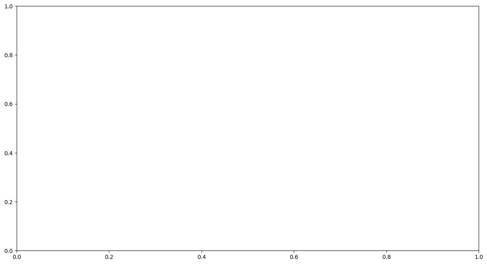
fig = plt.figure(figsize=(15, 8))
ax1 = plt.subplot(2, 1, 1) # this would create a 2x1 grid of subplots
# and choose axes #1
ax2 = plt.subplot(2, 1, 2) # this would create a 2x1 grid of subplots
# and choose axes #2
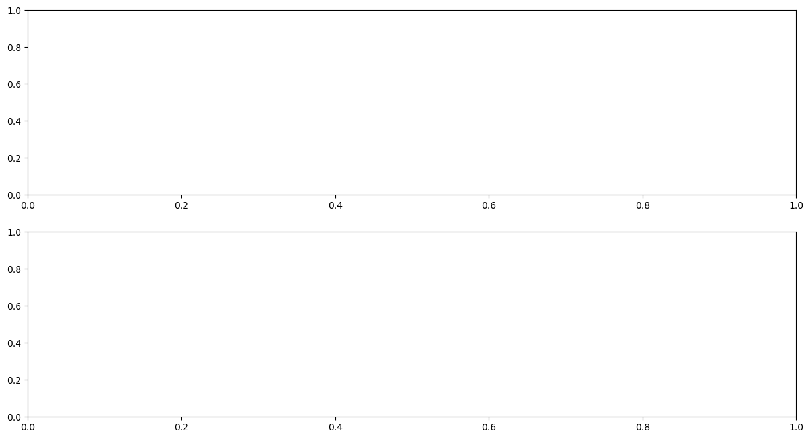
Creaiamo un oggetto Pandas chiamato DataFrame in cui inseriemo dei valori casuali.
np.random.seed(0)
df = pd.DataFrame(
data={
"a": np.random.randint(0, 100, 30),
"b": np.random.randint(0, 100, 30),
"c": np.random.randint(0, 100, 30),
}
)
df.head()
| a | b | c | |
|---|---|---|---|
| 0 | 44 | 47 | 17 |
| 1 | 47 | 64 | 79 |
| 2 | 64 | 82 | 4 |
| 3 | 67 | 99 | 42 |
| 4 | 67 | 88 | 58 |
Ora creiamo una figura con una griglia 2x2 di sottoplot.
Popoliamo i grafici usando i dati contenuti in df.
fig, ax = plt.subplots(2, 2, figsize=(15, 8))
x = np.arange(0, 30)
ax[0][0].plot(x, df["a"]) # The top-left axes
ax[0][1].plot(x, df["b"]) # The top-right axes
ax[1][0].plot(x, df["c"]) # The bottom-left axes
ax[1][1].plot(df["a"], df["b"], "o") # The bottom-right axes
[<matplotlib.lines.Line2D at 0x10c86ecd0>]
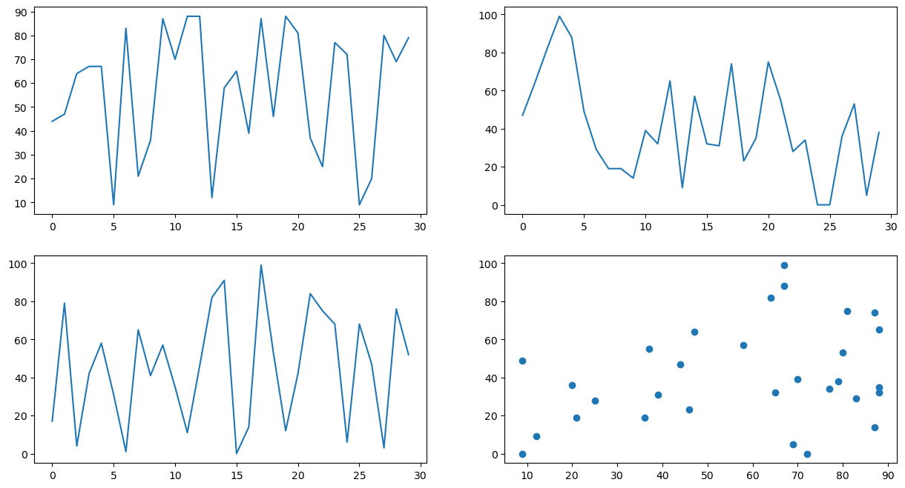
8.1.2. Funzione plot#
Le quantità da plottare sono ndarrays, ma anche una lista viene trasformata direttamente in un array quando viene passata come argomento del plot. Esempio:
_ = plt.plot([1, 2, 3, 4])
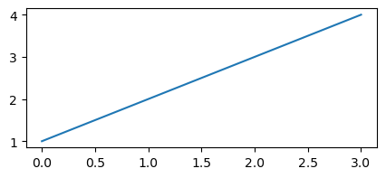
Una lista unica viene interpretata come la funzione da plottare lungo y, ma se ne passiamo due la prima viene interpretata come asse x. Infine, una stringa come terzo parametro viene interpretata come un descrittore per il colore della linea, lo stile, ecc.
Esempio: disegno di dati contenuti in due liste con linea continua (parametro ‘-’) e pallini rossi (parametro ‘or’)…
x = [1, 2, 3, 4]
y = [1, 4, 9, 16]
_ = plt.plot(x, y, "or-")
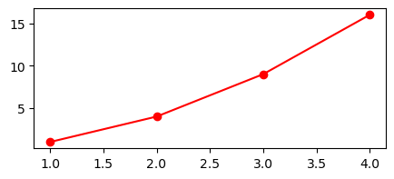
Oppure si possono definire due o più ndarrays, da passare al plot. Nell’esempio seguente vengono definite due funzioni da rappresentare in un unico grafico (si noti il colore differente prima del -):
x = np.linspace(0.0, 2.0 * np.pi, 101)
y = np.sin(x)
z = np.cos(x)
plt.plot(x, y, "b-")
plt.plot(x, z, "r-")
[<matplotlib.lines.Line2D at 0x10c989bd0>]
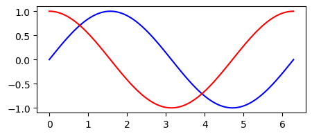
Possiamo anche scrivere, in maniera più succinta, quanto segue
_ = plt.plot(x, y, "g-", x, z, "b-")
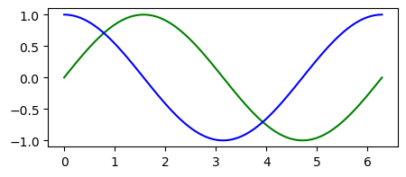
La stringa (opzionale) che appare come terzo parametro (se non specificata, disegna una linea blu) descrive il colore, un eventuale marker e lo stile della linea in un unico parametro. È possibile definire i colori comuni con le lettere seguenti:
b: blue
g: green
r: red
c: cyan
m: magenta
y: yellow
k: black
w: white
Il parametro successivo, se presente, rappresenta il tipo di linea e l’eventuale punto (eventualmente entrambi, se presenti). I simboli corrispondenti sono:
-: solid line style
–: dashed line style
-.: dashed-dotted line style
:: dotted line style
.: point marker
,: pixel marker
o: circle marker
v: triangle down marker
^: triangle up marker
<: triangle left marker
s: square marker
p: pentagon marker
*: star marker
h: hexagon marker
+: plus marker
x: x marker
D: diamond marker
|: vertical line marker
_: horizonthal line marker
Alcuni dei possibili parametri opzionali che è possibile passare alla funzione plot sono:
alpha: trasparenza della linea (float: 0.0 = trasparente, 1.0 = opaca)
color (o “c”): colore della linea
linestyle (o “ls”): stile della linea
linewidth (o “lw”): larghezza della linea (float)
marker: tipo di marker
markersize (o “ms”): dimensione del marker (float)
markevery: ogni quanti punti mettere un marker (ma si possono specificare anche markers singoli, ecc.)
Esempio:
plt.plot(x, y, linestyle="-", linewidth=2.0, color="b", marker="x", markevery=(10))
plt.plot(x, z, ls="-", lw=1.0, marker="x", markersize=10.0, color="y", markevery=(10))
[<matplotlib.lines.Line2D at 0x10c96c610>]
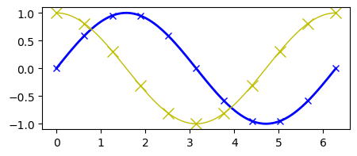
È ovviamente possibile inserire nel grafico un titolo, delle labels sugli assi, una griglia, del testo in posizione arbitraria, ecc. Una delle caratteristiche di mathplotlib è quella di poter utilizzare il rendering in \(\LaTeX\) delle stringhe, facendole precedere da una “r” (che sta per “raw”) per indicare a Python che questo è un codice TeX. Per esempio:
def f(t):
return np.exp(-t) * np.cos(2 * np.pi * t)
t1 = np.arange(0.0, 5.0, 0.1)
plt.plot(t1, f(t1), "bo-")
plt.title(r"Un coseno smorzato: $e^{-t}\cos(2\pi t)$")
plt.xlabel(r"$t$")
plt.ylabel(r"$f(t)$")
plt.xlim(-0.5, 5.5)
plt.ylim(-0.8, 1.2)
(-0.8, 1.2)
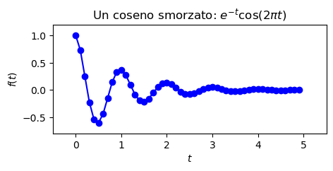
È possibile cambiare lo stile del grafico e la palette di colori rispetto al default di matplotlib. Per esempio:
import seaborn as sns
from scipy.constants import golden
sns.set_theme(
context="paper",
style="darkgrid",
palette="colorblind",
rc={"figure.figsize": (5.0, 5.0 / golden)},
)
SEED = 12345
rng = np.random.default_rng(SEED)
plt.plot(t1, f(t1), "bo-")
plt.title(r"Un coseno smorzato: $e^{-t}\cos(2\pi t)$")
plt.xlabel(r"$t$")
plt.ylabel(r"$f(t)$")
plt.xlim(-0.5, 5.5)
plt.ylim(-0.8, 1.2)
plt.show()
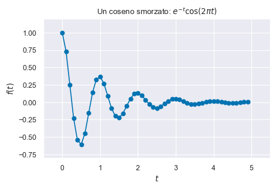
8.2. Notazione plt.subplots()#
Il modo prescritto per creare una figura con un singolo grafico usa la notazione plt.subplots().
fig, ax = plt.subplots()
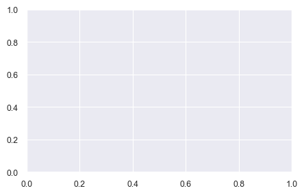
L’istruzione precedente assegna una variabile separata a ciascuno dei due risultati ritornati da plt.subplots(). Si noti non abbiamo passato alcun argomento a plt.subplots(). La chiamata predefinita è subplots(nrows=1, ncols=1). Di conseguenza, creiamo un singolo grafico, come indicato sopra.
Consideriamo ora un caso in cui abbiamo due grafici arrangiati orizzontalmente. Definiamo delle coordinate.
x1 = [1, 2, 3, 4, 5]
y1 = [11, 22, 33, 44, 55]
x2 = [2, 3, 4, 5, 6]
y2 = [77, 66, 55, 44, 33]
Si notino gli argomenti nrows=1 e ncols=2, insieme all’uso di ax1 e ax2.
fig, (ax1, ax2) = plt.subplots(nrows=1, ncols=2, figsize=(8, 4))
ax1.scatter(x=x1, y=y1, marker="o", c="r", edgecolor="b")
ax1.set_title("$y_1$ in funzione di $x_1$")
ax1.set_xlabel("$x_1$")
ax1.set_ylabel("$y_1$")
ax2.scatter(x=x2, y=y2, marker="o", c="b", edgecolor="b")
ax2.set_title("$y_2$ in funzione di $x_2$")
ax2.set_xlabel("$x_2$")
ax2.set_ylabel("$y_2$")
Text(0, 0.5, '$y_2$')
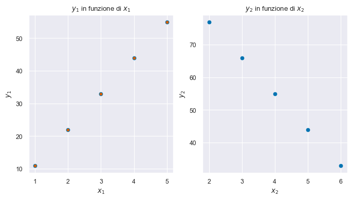
Facciamo un altro esempio usando i dati penguins.csv.
import pandas as pd
df = pd.read_csv('data/penguins.csv')
df.dropna(inplace=True)
fig, ((ax0, ax1), (ax2, ax3)) = plt.subplots(nrows=2, ncols=2, figsize=(9, 6))
ax0.hist(df["bill_depth_mm"], 10, density=True)
ax0.set_title('Bill depth (mm)')
ax1.hist(df["bill_length_mm"], 10, density=True)
ax1.set_title('Bill length (mm)')
ax2.scatter(x=df["bill_length_mm"], y=df["bill_depth_mm"])
ax2.set_title('Bill depth as a function of bill length')
ax3.boxplot(df["body_mass_g"])
ax3.set_title('Body mass (g)')
ax3.set_xlabel(" ")
fig.tight_layout() # handle overlaps
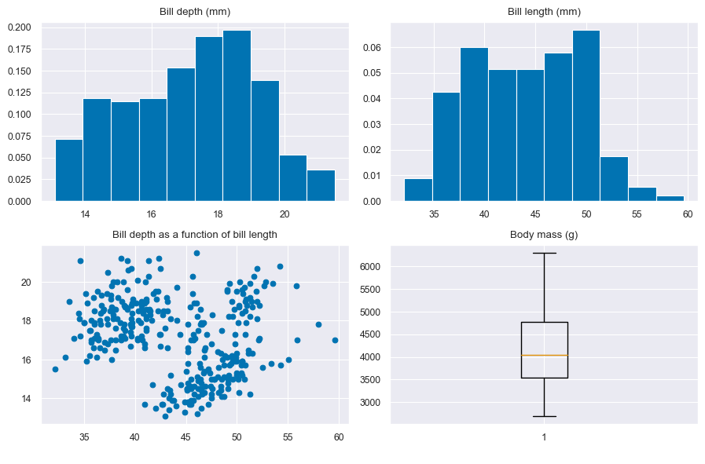
8.3. Watermark#
%load_ext watermark
%watermark -n -u -v -iv -w
Last updated: Sat Mar 11 2023
Python implementation: CPython
Python version : 3.11.0
IPython version : 8.11.0
numpy : 1.24.2
seaborn : 0.12.2
pandas : 1.5.3
matplotlib: 3.7.1
Watermark: 2.3.1